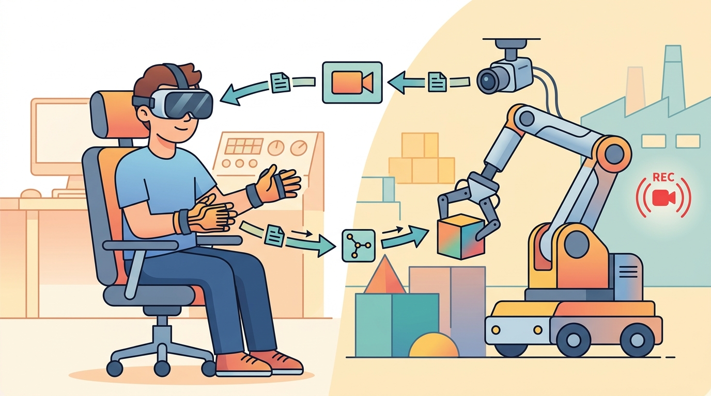

"The folder looked organized until the policy asked which camera was the wrist camera."
A Dataset Loader

This section assumes familiarity with the data quality and labeling concerns introduced in section 23.5, and with the action-chunking representation discussed in section 22.3. The format contract established here feeds directly into Chapter 24, which compares major robot datasets and examines the scaling laws that motivate pooling standardized data across embodiments. The three-layer pipeline (raw, normalized, training) also recurs in Part VI when learned representations are fine-tuned across datasets with different action spaces.
Two labs collect 500 cup-grasping episodes each, but when they pool data and retrain, accuracy drops. The culprit: one team stored joint angles in degrees, the other in radians, and no field name flagged the difference. As robot learning scales toward cross-embodiment foundation models, silent format mismatches become the biggest silent tax on progress. LeRobotDataset exists to eliminate that tax by making metadata, video, sensorimotor signals, and episode boundaries share one explicit contract. Here you will read that contract field by field, convert a raw recording into it, and see how a validated schema catches unit errors before they corrupt a training run.
Format Contract
A robot dataset must answer four questions before a model loads it: what is the observation, what is the action, what episode does this frame belong to, and what metadata defines the body and task? LeRobotDataset v3 organizes these answers around standardized feature names, Parquet tables, videos or images, and metadata files. Getting those names right depends on the same concerns about data quality, diversity, and labeling that apply to the collection stage.
If two labs load the same dataset differently, they are not running the same experiment. Standardized formats reduce the chance that preprocessing becomes an invisible baseline difference.
| Field Family | Typical Contents | Why It Matters |
|---|---|---|
| Observation | Images, robot state, proprioception, tactile signals | Defines what the policy can know. |
| Action | Joint targets, end-effector deltas, gripper commands | Defines what the policy is trained to output. |
| Episode index | episode id, frame index, timestamp | Keeps temporal structure intact. |
| Metadata | fps, robot type, features, splits, license | Makes loading and comparison reproducible. |
Code Fragment 1 validates a tiny feature schema before conversion. This catches the most common mistake: an action or timestamp field that exists in prose but not in the actual files.
# Validate a LeRobotDataset-style feature schema before conversion
# Demonstrates the minimum required fields and unit-annotation checks
import numpy as np
# Minimal required fields for a LeRobotDataset-compatible episode table
REQUIRED_FIELDS = {
"timestamp", # float, seconds since episode start
"episode_index", # int, episode identifier
"frame_index", # int, frame position within episode
"observation.state", # float array, joint angles in radians
"action", # float array, joint targets in radians
"observation.images.front", # str or bytes, camera frame reference
}
# Simulated feature schema from a conversion script (what the converter claims)
candidate_schema = {
"timestamp": {"dtype": "float32", "unit": "seconds"},
"episode_index": {"dtype": "int64", "unit": None},
"frame_index": {"dtype": "int64", "unit": None},
"observation.state": {"dtype": "float32", "unit": "radians", "shape": (14,)},
"action": {"dtype": "float32", "unit": "radians", "shape": (14,)},
"observation.images.front": {"dtype": "video", "unit": None},
}
missing = REQUIRED_FIELDS - set(candidate_schema.keys())
schema_ok = len(missing) == 0
print(f"schema ok: {schema_ok}")
print(f"missing fields: {sorted(missing)}")
# Verify action unit is declared (not left ambiguous)
action_meta = candidate_schema.get("action", {})
unit = action_meta.get("unit")
unit_declared = unit is not None and unit != ""
print(f"action unit declared: {unit_declared} ({unit})")
# Simulate a shape smoke-test on a random synthetic episode
rng = np.random.default_rng(0)
n_frames = 10
synthetic_state = rng.uniform(-1.0, 1.0, (n_frames, 14)).astype(np.float32)
synthetic_action = rng.uniform(-1.0, 1.0, (n_frames, 14)).astype(np.float32)
mean_abs_action = float(np.mean(np.abs(synthetic_action)))
all_zero_action = mean_abs_action < 1e-6
print(f"mean |action|: {mean_abs_action:.4f} (near-zero signals missing follower data: {all_zero_action})")
schema ok: True missing fields: [] action unit declared: True (radians) mean |action|: 0.5032 (near-zero signals missing follower data: False)
The expected output is intentionally boring: schema ok: True and an empty missing-field list. That boring result is valuable because it means every later training script can assume episode identity, temporal order, timestamp alignment, observation image, robot state, and action are present. If observation.state or timestamp is missing, do not patch the trainer; repair the conversion pipeline so every downstream policy receives the same scientific object.
After the schema is clear, use LeRobot's dataset tooling to create, push, visualize, and train from the dataset. The maintained stack handles storage layout, Hub metadata, video indexing, and PyTorch access that would otherwise become fragile custom glue.
Pipeline Recipe
- Collect raw logs with hardware timestamps and calibration versions.
- Normalize feature names and units, especially action units and camera names.
- Convert frames and states into a standardized dataset directory.
- Run a loader smoke test that reads random frames across episodes.
- Publish metadata, dataset card, split manifest, and license before reporting results.
Conversion And Verification
A robust conversion pipeline keeps three layers separate. The raw layer preserves the original robot logs, including vendor-specific messages and leader-device signals. The normalized layer exposes canonical features such as observation.images.front, observation.state, and action. The training layer may add cached tensors, resized videos, or model-specific transforms, but those derived artifacts should be reproducible from the normalized layer.
The most important verification step is random-access replay. Sample an episode from the beginning, middle, and end of the dataset; render the camera frame; print the aligned robot state; and overlay the action that follows. This catches off-by-one frame shifts, stale calibration, swapped wrist cameras, and action-unit mistakes that a shape-only validator will miss. The three-layer separation matters most at reuse time: when a second lab wants to retrain on your data with a different image resolution or a different action representation, they should be able to rebuild only the training layer from your normalized layer without touching the raw layer. If your pipeline collapses normalization and training transforms into a single script, that reuse is impossible without re-collecting data.
When naming camera streams, use lerobot-visualize-dataset (the LeRobot CLI command) to render a side-by-side replay before finalizing camera feature names. The tool overlays the feature key on each frame, so a swapped observation.images.wrist and observation.images.front is immediately visible as a policy-perspective error rather than a shape or dtype mismatch that only surfaces at training time. Run it on episode 0 and at least one episode from the middle of the dataset; a mislabeled stream that happens to look plausible in episode 0 will expose itself when the wrist perspective changes across tasks.
A swapped wrist camera is the dataset equivalent of labeling your left shoe "right": the shape is correct, the metadata says nothing is wrong, and every downstream shoe-putting-on policy learns something subtly backwards.
- Open the dataset through the same loader used by training.
- Sample ten frames across at least three episodes.
- Verify monotonic timestamps and constant frame-rate assumptions.
- Render camera frames with robot state and action summaries beside them.
- Fail the conversion if any feature is missing, temporally shifted, or unit-ambiguous.
A dataset can pass shape checks while failing semantics. Joint radians, joint degrees, end-effector meters, normalized gripper width, and binary gripper state must not share a vague field called action.
A lab converting GELLO demonstrations should store both the raw leader joint stream and the follower action target. The raw stream helps debug interface failures; the follower target is usually the training label.
Consider a specific case: a lab records 200 ALOHA bimanual episodes at 50 Hz, each roughly 10 seconds long, yielding 500 frames per episode and 100,000 total rows. The normalized Parquet table stores one row per frame with columns timestamp, observation.state (14 joint angles in radians, one per arm), action (14 joint targets), and episode_index. Two camera streams (front and wrist) are stored as separate MP4 files named by episode index, not embedded in Parquet. The smoke test samples episode 0, episode 99, and episode 199; renders frame 0 and frame 250 of each; and prints the mean absolute action value per episode. If any episode's mean action is near zero for all joints, the follower signal was never recorded and the raw leader stream was mistakenly written to the action field instead.
The next dataset-format frontier is not only larger storage. It is queryable robot experience: find episodes by task language, failure mechanism, embodiment, camera geometry, object category, and action representation without writing a custom parser for every lab.
Can a reader load one episode, recover every camera frame, align it to robot state and action, identify the task instruction, and know the license? That is the minimum bar for reusable robot data.
Standard formats turn teleoperation logs into scientific artifacts. The policy is only as reproducible as the dataset loader, metadata, and split manifest that feed it.
Take a raw demonstration folder and draft a LeRobotDataset-style feature schema. Mark which fields need unit conversion and which fields must remain raw for debugging.
What's Next
Chapter 24 builds on this format contract by comparing major robot datasets and the scaling laws that motivate pooling data across robots.
Zhao, T. Z. et al. (2023). Learning Fine-Grained Bimanual Manipulation with Low-Cost Hardware.
Introduces ALOHA and ACT, making the connection between low-cost bimanual teleoperation, action chunking, and real-world manipulation data explicit.
A kinematically matched leader device study that directly compares teleoperation ergonomics and reliability against other low-cost interfaces.
Defines the handheld gripper approach, latency matching, and relative-trajectory action interface used in portable demonstration collection.
Cheng, X. et al. (2024). Open-TeleVision: Teleoperation with Immersive Active Visual Feedback.
A current reference for immersive visual feedback, active perception, and VR-style operator embodiment in data collection.
Hugging Face LeRobot Documentation.
Documents dataset conversion, policy training, and robot-control utilities that turn teleoperation logs into reusable learning artifacts.